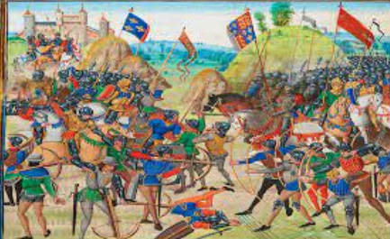

When ?: From 1337 to 1453 (14th-15th century). Where ?: In France Who ?: France against England


Causes of the Hundred Years War: This is how the Hundred Years War originated. In 1328 Charles IV, king of France, died and a relative of his, Philip VI of Valois, took over. Another relative of Charles IV, King Edward III of England, aspired to lead the French kingdom and owned territories in France, so the Hundred Years War began.
Course of the war:The Hundred Years War was characterized by long periods of truce, it is divided into 2 phases: 1st phase: - England, equipped with firearms, infantry and archers, conquers several French territories.

2nd phase: - The British conquer much of northwestern France - Joan of Arc, a young peasant woman, reverses the situation and by involving the French people manages to free Orleans so from that moment France had a clear recovery marked by numerous victories.
Conclusion: The war ends around 1453 with the victory of France. Consequences: The French sovereign Charles VII extended his power over almost all of France, leaving only the port of Calais to the British. Fonti
